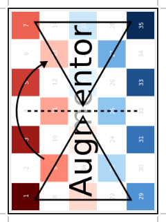

Rotate90: Rotate upwards 90 degree
Augmentor.Rotate90 — Type.Rotate90 <: Augmentor.AffineOperationDescription
Rotates the image upwards 90 degrees. This is a special case rotation because it can be performed very efficiently by simply rearranging the existing pixels. However, it is generally not the case that the output image will have the same size as the input image, which is something to be aware of.
If created using the parameter p, the operation will be lifted into Either(p=>Rotate90(), 1-p=>NoOp()), where p denotes the probability of applying Rotate90 and 1-p the probability for applying NoOp. See the documentation of Either for more information.
Usage
Rotate90()
Rotate90(p)Arguments
p::Number: Optional. Probability of applying the operation. Must be in the interval [0,1].
See also
Rotate180, Rotate270, Rotate, Either, augment
Examples
julia> using Augmentor
julia> img = [200 150; 50 1]
2×2 Array{Int64,2}:
200 150
50 1
julia> img_new = augment(img, Rotate90())
2×2 Array{Int64,2}:
150 1
200 50| Input | Output for Rotate90() |
|---|---|
 |  |